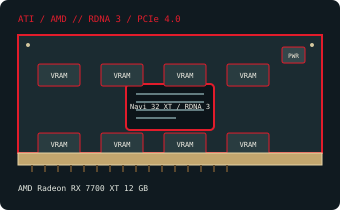

[ MODERN PCI EXPRESS GRAPHICS // IDENTIFIED COMPONENT ]
AMD Radeon RX 7700 XT 12 GB
Navi 32 XT / RDNA 3, 2023. This record identifies the listed retail model/configuration; board-partner variations are called out separately.

MODEL / VARIANT: RX 7700 XT 12 GB, separate from RX 7800 XT (16 GB) and RX 7600 XT (16 GB). Factory overclocked cooler designs vary.
Recorded specifications
| Cataloged product | AMD Radeon RX 7700 XT 12 GB |
|---|---|
| GPU / architecture / launch | Navi 32 XT / RDNA 3; 2023. |
| Core & memory | 54 compute units and 3,456 stream processors; 12 GB GDDR6 on a 192-bit bus; 2,170 MHz game clock and up to 2,544 MHz boost (AMD reference specifications). |
| Host interface & power | PCI Express 4.0 x16; reference total board power is 245 W; reference-class cards use two 8-pin PCIe connectors. 245 W reference board-power class; use a PSU and cabling meeting AMD’s and the actual board vendor’s recommendations. |
| Typical reference outputs | GPU supports modern DisplayPort 2.1/HDMI 2.1-class display features; reference and partner port counts differ, so inspect the bracket and board specification. |
| Board dimensions | Dimensions are board-specific. A documented Sapphire PULSE RX 7700 XT 12 GB board measures 280 × 129 × 53 mm (L × H × T); other partner cards differ. Verify the exact manufacturer model/revision before installation. |
| Variant boundary | RX 7700 XT 12 GB, separate from RX 7800 XT (16 GB) and RX 7600 XT (16 GB). Factory overclocked cooler designs vary. |
Compatibility, service & archival notes
Check PCIe x16 slot clearance, two 8-pin leads, PSU capacity and cooler length/thickness. Confirm UEFI and a current supported Radeon driver. Display connector versions and supported combinations should be read from the exact add-in-board specification, not inferred from the GPU name.
- Check the exact slot keying/signaling, board dimensions, auxiliary-power pinout, PSU guidance, airflow and display outputs for the specimen; connector appearance alone does not establish compatibility.
- Install a driver supporting the recorded device ID and target OS. Preserve the original driver and firmware versions before making changes.
- Record board partner, PCB and cooler revision, device/subsystem IDs, BIOS, adapter set and physical condition. Do not power a card with damage, corrosion, obstructed cooling or suspected shorts.
Manufacturer, model & standards sources
- AMD Radeon RX 7700 XT 12 GB specifications — TechPowerUp GPU DatabaseIndependent model-level GPU and memory reference; exact add-in-board properties can differ.
- AMD Radeon RX 7700 XT product specificationsAMD product specifications; confirm power connectors, physical dimensions and ports on the actual partner model.
- PCI-SIG PCI Express specificationsHost-link standard reference; physical fit does not alone guarantee power, firmware or driver compatibility.
- AMD product support and driver selectionAMD manufacturer support reference for identifying a compatible driver branch and operating system; availability depends on product age.
- SAPPHIRE PULSE Radeon RX 7700 XT 12G specificationsBoard-manufacturer reference for the cited example dimensions; other add-in-board designs differ.
GPU-family references do not supersede the card manufacturer’s manual, nameplate or board revision for a specific specimen.